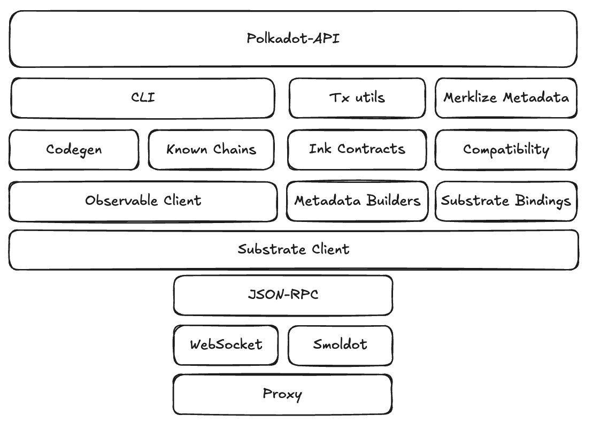
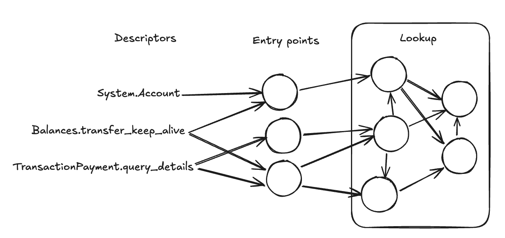

<!DOCTYPE html>
<html lang="en">

<head>
  <meta charset="utf-8" />
  <meta name="viewport" content="width=device-width, initial-scale=1.0, maximum-scale=1.0, user-scalable=no" />

  <title>Polkadot-API</title>
  <link rel="icon" href="./../../assets/favicon.svg" />
  <link rel="shortcut icon" href="./../../assets/favicon.png" />
  <link rel="stylesheet" href="./../../dist/reset.css" />
  <link rel="stylesheet" href="./../../dist/reveal.css" />
  <link rel="stylesheet" href="./../.././assets/styles/PBA-theme.css" id="theme" />
  <link rel="stylesheet" href="./../../css/highlight/shades-of-purple.css" />

  <link rel="stylesheet" href="./../.././assets/styles/custom-classes.css" />

</head>

<body class="site">
  <header class="site-header">
    <!-- This logo is a link only on the watching server, not the production build -->
    <a href="">
      
    </a>
  </header>
  <main class="reveal">
    <article class="slides">
      <section  data-markdown><script type="text/template">

# Polkadot-API

<span style="color: lightgray; font-size: 0.8em;">(aka PAPI)</span>

<aside class="notes"><p>So far we&#39;ve seen the low-level details for interacting with a chain. Now we&#39;ll go a higher level of abstraction and see how Polkadot-API, in specific, solves those challenges, and what other features it adds.</p>
</aside></script></section><section ><section data-markdown><script type="text/template">
## PAPI principles

- Light-client first
- Modular
- Light weight
- Composable
- Simplify dApp development
</script></section><section data-markdown><script type="text/template">
### Packages



<aside class="notes"><p><a href="https://excalidraw.com/#json=MlLv0U2YI3nfTZwEkRTf1,iaAmM8qLSSYKNFkoJtlNsA">https://excalidraw.com/#json=MlLv0U2YI3nfTZwEkRTf1,iaAmM8qLSSYKNFkoJtlNsA</a></p>
<p>Warn that observable-client is opinionated and unstable, it&#39;s an implementational detail of papi. The other packages are unopinionated or at least stable.</p>
</aside></script></section><section data-markdown><script type="text/template">
### Polkadot-API

- Top-level package
- Main use case: dApps
- Chain-agnostic
- Query or subscribe to chain state
- Send and track transactions
</script></section><section data-markdown><script type="text/template">
### Polkadot-API

```ts
import { dot } from "@polkadot-api/descriptors";
import { createClient } from "polkadot-api";
import { getWsProvider } from "polkadot-api/ws-provider/web";

const client = createClient(getWsProvider("ws://…"));
const typedApi = client.getTypedApi(dot);

const ACCOUNT_ID = "15oF4uVJwmo4TdGW7VfQxNLavjCXviqxT9S1MgbjMNHr6Sp5";
const account = await typedApi.query.System.Account.getValue(ACCOUNT_ID);
```
</script></section><section data-markdown><script type="text/template">
### CLI

- Codegen
- Generate TS types for chains
- Part of Compatibility API
</script></section><section data-markdown><script type="text/template">
### Metadata Builders

- Codecs from metadata
  - Lookup
  - Storage
  - Runtime APIs
  - Transactions
  - Events
</script></section><section data-markdown><script type="text/template">
### Metadata Builders

```ts
import { getDynamicBuilder, getLookupFn } from "@polkadot-api/metadata-builders";

const metadata = getMetadataFromSource();
const lookup = getLookupFn(metadata);
const dynamicBuilder = getDynamicBuilder(lookup);

const { keys, value, fallback } = dynamicBuilder.buildStorage("Pallet", "Entry");

const { codec, location } = dynamicBuilder.buildCall("Pallet", "Name");

const { args, value } = dynamicBuilder.buildRuntimeCall("Api", "Method");

const codec = dynamicBuilder.buildDefinition(134);
```
</script></section><section data-markdown><script type="text/template">
### Observable Client

- Internal detail
- Block pinning
- Subscriptions
</script></section><section data-markdown><script type="text/template">
### Observable Client

<!-- prettier-ignore -->
```ts [|6|8-9|13-15|16-17|19-20]
import { getObservableClient } from "@polkadot-api/observable-client";
import { getWsProvider } from "@polkadot-api/ws-provider/web";
import { createClient } from "@polkadot-api/substrate-client";
import { firstValueFrom } from "rxjs";

const client = getObservableClient(createClient(getWsProvider("ws://…")));

const chainHead = client.chainHead$();
const finalized = await firstValueFrom(chainHead.finalized$);

const ACCOUNT_ID = "15oF4uVJwmo4TdGW7VfQxNLavjCXviqxT9S1MgbjMNHr6Sp5";
const account = await firstValueFrom(
  chainHead.storage$(
    finalized.hash,
    "value",
    ctx =>
      ctx.dynamicBuilder.buildStorage("System", "Account").keys.enc(ACCOUNT_ID),
    null,
    (data, ctx) => data &&
      ctx.dynamicBuilder.buildStorage("System", "Account").value.dec(data)
  )
);
```
</script></section><section data-markdown><script type="text/template">
### Substrate Bindings

- Known codecs for Substrate
  - SS58 Format
  - Block header
  - Metadata v14
  - Metadata v15
- Other known utilities
  - Storage hashers
  - Multisig account
</script></section><section data-markdown><script type="text/template">
### Substrate Client

- JSON-RPC Spec
- TS Interface
- Correlations
  - Message IDs
  - Subscription IDs
  - Operation IDs
</script></section><section data-markdown><script type="text/template">
### Substrate Client

<!-- prettier-ignore -->
```ts [|4|6-7|8-18|20-24]
import { getWsProvider } from "@polkadot-api/ws-provider/web";
import { createClient } from "@polkadot-api/substrate-client";

const client = createClient(getWsProvider("ws://…"));

const chainHead = client.chainHead(
  true,
  async followEvt => {
    if (followEvt.type === "initialized") {
      const finalized = followEvt.finalizedBlockHashes.at(-1)!;

      const result = await chainHead.storage(
        finalized,
        "value",
        "0x{storage key}",
        null,
      );
      console.log("SCALE result: " + result);

      chainHead.unpin(followEvt.finalizedBlockHashes);
    }
    if (followEvt.type === "newBlock") {
      chainHead.unpin([followEvt.blockHash]);
    }
  },
  console.error
);
```
</script></section><section data-markdown><script type="text/template">
### JSON-RPC Providers

```ts
type JsonRpcProvider = (onMessage: MessageCallback) => JsonRpcConnection;

type MessageCallback = (message: string) => void;

interface JsonRpcConnection {
  send: (message: string) => void;
  disconnect: () => void;
}
```
</script></section><section data-markdown><script type="text/template">
### JSON-RPC Providers

Create a `withLogsRecorder`

```ts
export function withLogsRecorder(
  persistLog: (msg: string) => void,
  // Provider wrapped
  provider: JsonRpcProvider
): JsonRpcProvider {
  // TODO
}
```
</script></section></section><section ><section data-markdown><script type="text/template">
## Subscriptions
</script></section><section data-markdown><script type="text/template">
### Pull vs Push

<pba-cols style="font-size: 0.8em">
<pba-col>

<!-- prettier-ignore -->
```ts
let lastValue = null;
while (keepWatching) {
  const value = await typedApi
    .query.System.Account
    .getValue(ACCOUNT_ID);

  if (value !== lastValue) {
    console.log("new value", value);
  }
  lastValue = value;

  await waitMs(1000);
}
```

</pba-col>
<pba-col>

<!-- prettier-ignore -->
```ts
typedApi
  .query.System.Account
  .watchValue(ACCOUNT_ID)
  .subscribe(value => {
    console.log("new value", value);
  })
```

</pba-col>
</pba-cols>
</script></section><section data-markdown><script type="text/template">
<pba-cols style="font-size: 0.8em">
<pba-col>

### Pull

Consumer decides when to get the value

</pba-col>
<pba-col>

### Push

Producer notifies of new changes

</pba-col>
</pba-cols>
</script></section><section data-markdown><script type="text/template">
### JSON-RPC Spec

- ChainHead Events: <span class="fragment">Push-based</span>
- Operations: <span class="fragment">Push/pull?</span>
  - Low-level: Push <!-- .element: class="fragment" --->
  - High-level: Pull <!-- .element: class="fragment" --->
  - Higher-level: Push 🤯 <!-- .element: class="fragment" --->

<aside class="notes"><p>Events (new block, finalized, etc) are push-based, the node notifies us when a new block is produced
Operations depend on the level we&#39;re looking at.</p>
</aside></script></section><section data-markdown><script type="text/template">
### Working Async

- Push is asynchronous
- Pull can be sync or async
- Ancient JS (2014-) used callbacks for async code

```ts
// Ancient JS Pull
api.query.System.Account.getValue(ACCOUNT_ID, (error, result) => {
  if (error) {
    return console.error("oh no!");
  }
  console.log("Result", result);
});

// Ancient JS Push
api.query.System.Account.watchValue(
  ACCOUNT_ID,
  value => {
    console.log("Value", value);
  },
  error => console.error("oh no!")
);
```

<aside class="notes"><p>In our context, pull is async. If you need the storage, you have to make a request to the node to pull it out for you.</p>
</aside></script></section><section data-markdown><script type="text/template">
### Enter Promises 🌈

- Technically still using callbacks.
- Common interface, allows composability.
- Removes "callback hell"
- 2017+ enhanced language: async/await
- Works great for pull operations: fetch
</script></section><section data-markdown><script type="text/template">
### And for push?

😞 <!-- .element: class="fragment" --->

<div class="fragment">

Async generators?

```ts
// async generator API
const account = api.query.System.Account.watchValue(ACCOUNT_ID);

for await (const value of account) {
  console.log(value);
}
```

But that's pull!

</div>
</script></section><section data-markdown><script type="text/template">
### Enter Observables 🌈

- Promise but for multiple values
- Common interface, composable
- Removes "callback hell"
- Convertible to promises
- TC-39 Stage 1 <span style="color: darkgray" class="fragment">(big copium)</span>
- Meanwhile rxjs <!-- .element: class="fragment" -->
</script></section><section data-markdown><script type="text/template">
### Observables 101

```ts
import { Observable } from "rxjs";

// Emit one value every second up to 10
const observable$ = new Observable<number>(subscriber => {
  let v = 0;

  const token = setInterval(() => {
    const valueToEmit = v;
    v++;
    subscriber.next(valueToEmit);
    if (valueToEmit === 10) {
      subscriber.complete();
    }
  }, 1000);

  return () => clearInterval(token);
});
```
</script></section><section data-markdown><script type="text/template">
### Observables 101

```ts
observable$.subscribe(value => {
  console.log(value);
});

observable$.subscribe({
  next: value => console.log(value),
  error: error => console.error(error),
  complete: () => console.log("completed"),
});
```

<aside class="notes"><p>Showcase / demo how observables are cold by default</p>
</aside></script></section><section data-markdown><script type="text/template">
### Composing Observables

Operator: `(source: Observable<T>) => Observable<R>`

```ts
const map =
  <T, R>(mapFn: (value: T) => R) =>
  (source: Observable<T>) =>
    new Observable<R>(subscriber => {
      const subscription = source.subscribe({
        next: v => subscriber.next(mapFn(v)),
        error: e => subscriber.error(e),
        complete: () => subscriber.complete(),
      });

      return subscription;
    });

const multipliedBy2$ = observable$.pipe(map(v => v * 2));
// Same as map(v => v * 2)(multipliedBy2$)
```
</script></section><section data-markdown><script type="text/template">
### Composing Observables

Pipe-ing

```ts
import { interval, map, take } from "rxjs";

// Create an observable of the first 10 even numbers, one second at a time.
const even$ = interval(1000).pipe(
  map(v => v * 2),
  take(10)
);
```
</script></section><section data-markdown><script type="text/template">
### Combining Observables

- `combineLatest`, `merge`, `switchMap`, etc.
- Endless list: https://rxjs.dev/guide/operators#creation-operators-1
- Good resource: https://www.learnrxjs.io/learn-rxjs/operators
</script></section><section data-markdown><script type="text/template">
### Combining Observables

switchMap

```ts
const switchMap =
  <T, R>(mapFn: (value: T) => Observable<R>) =>
  (source: Observable<T>) =>
    new Observable<R>(subscriber => {
      // TODO

      const subscription = source.subscribe({
        next: v => {
          const innerObservable = mapFn(v);

          // TODO
        },
        error: e => subscriber.error(e),
        complete: () => subscriber.complete(),
      });

      return () => {
        // TODO
      };
    });

const bounty$ = selectedBountyId$.pipe(
  switchMap(id => {
    return from(typedApi.query.Bounties.Bounty.getValue(id));
  })
);
```
</script></section><section data-markdown><script type="text/template">
### Observable ↔ Promise

```ts
import { firstValueFrom, lastValueFrom, from, defer } from "rxjs";
const firstValue = await firstValueFrom(observable$);
const lastValue = await lastValueFrom(observable$);

const observable$ = from(fetch("…"));
const observable$ = defer(() => fetch("…"));
```

<aside class="notes"><p>It&#39;s important to keep in mind what these functions do: both firstValueFrom and lastValueFrom subscribe to the observable, and then unsubscribe.</p>
<p>Difference between from and defer.</p>
</aside></script></section><section data-markdown><script type="text/template">
### Polkadot Chains

- Pull
  - Constants (metadata)
  - Runtime APIs
  - Storage query
- Push
  - Blocks
  - Storage watch
  - Transactions

<aside class="notes"><p>Pull operations: Easier to offer promises
Push: Observables all the way.</p>
<ul>
<li>Blocks: finalized$</li>
</ul>
<p>Why transactions are &quot;push&quot;?</p>
</aside></script></section><section data-markdown><script type="text/template">
### Combining streams

Exercise: Find the referenda where a specific account voted in the same direction as the current outcome.

- Account: 1jbZxCFeNMRgVRfggkknf8sTWzrVKbzLvRuLWvSyg9bByRG
- Track: 33

Hints:

- `query.ConvictionVoting.VotingFor.watchValue(account, track)`
- `query.Referenda.ReferendumInfoFor.getValues([number][])`

<aside class="notes"><ul>
<li>Don&#39;t count delegations.</li>
<li>Don&#39;t count split votes or abstains.</li>
</ul>
<p>TODO Maybe find a better example. This one is interesting, but it&#39;s a shame it would need to do <code>watchValue[]</code> and that just adds boilerplate. Also, not a huge fan of the nesting and the hacks around conviction voting. Plus having to share the account which is just a random string…</p>
<pre><code class="language-ts">const getDirectVotes = (voting: ConvictionVotingVoteVoting) =&gt; {
  if (voting.type === &quot;Delegating&quot;) return [];

  return voting.value.votes
    .map(([id, vote]) =&gt; {
      if (&quot;vote&quot; in vote.value) {
        const direction = vote.value.vote &amp; 0x80 ? &quot;aye&quot; : &quot;nay&quot;;
        return { id, direction };
      }
      return null;
    })
    .filter(v =&gt; v !== null);
};

dotApi.query.ConvictionVoting.VotingFor.watchValue(&quot;1jbZxCFeNMRgVRfggkknf8sTWzrVKbzLvRuLWvSyg9bByRG&quot;, 33)
  .pipe(
    map(getDirectVotes),
    switchMap(async voting =&gt; {
      const referenda = await dotApi.query.Referenda.ReferendumInfoFor.getValues(voting.map(v =&gt; [v.id]));

      return referenda
        .filter(v =&gt; v != null)
        .filter((referendum, i) =&gt; {
          const { direction } = voting[i];
          if (referendum.type !== &quot;Ongoing&quot;) {
            return (direction === &quot;aye&quot; &amp;&amp; referendum.type === &quot;Approved&quot;) || direction === &quot;nay&quot;;
          }
          const referendumDirection = referendum.value.tally.ayes &gt; referendum.value.tally.nays ? &quot;aye&quot; : &quot;nay&quot;;
          return direction === referendumDirection;
        })
        .map((v, i) =&gt; ({
          ...v,
          id: voting[i].id,
        }));
    })
  )
  .subscribe(r =&gt; {
    console.log(r);
  });
</code></pre>
</aside></script></section><section data-markdown><script type="text/template">
### Watch Entries


`Observable<Array<[Key, Value]>>?` <!-- .element: class="fragment" -->

<aside class="notes"><p>Remind issue with multiple forks</p>
<p>When watching entries, we might have a large list. When providing an Observable API it&#39;s important to note what has changed in specific.</p>
<p>Also, it&#39;s expensive, and it might skip some blocks.</p>
</aside></script></section><section data-markdown><script type="text/template">
### Watch Entries

```ts
watchEntries().subscribe(result => {
  // Hash + number + parent
  console.log(result.blockInfo);
  // Array<{ args: Key, value: Value }>
  console.log("deleted", result.deltas.deleted);
  console.log("upserted", result.deltas.upserted);
  // Array<{ args: Key, value: Value }>
  console.log("values", result.values);
});
```

<aside class="notes"><p>Exercise - change the previous implementation to watch referenda from any track.</p>
</aside></script></section></section><section ><section data-markdown><script type="text/template">
## Compatibility API

- Chain interactions are defined in the metadata.
- The metadata shows the "API" of the runtime.
- But the runtime is upgradeable!
- How to approach this?
</script></section><section data-markdown><script type="text/template">
### Solution #1

- #YOLO #BreakEverything
- Offer types for interactions
- If the chain doesn't support it when running, too bad!
- Polkadot-API: `client.getUnsafeApi()`
- Polkadot-JS + Type Registry
</script></section><section data-markdown><script type="text/template">
### Solution #2

- Get a unique value for each interaction
- Checksum based on the type for the interaction
- If the checksum changes, then the interaction is not compatible
</script></section><section data-markdown><script type="text/template">
### Solution #2

<pba-cols style="font-size: 0.8em">
<pba-col>

```ts
Referenda.submit({
  proposal_origin: Enum {
    BigSpender,
    MediumSpender,
    SmallSpender,
    WishForChange
  },
  proposal: Enum {
    Inline(Binary),
    Lookup(Binary, number)
  },
  enactment_moment: Enum {
    After(number),
    At(number)
  }
})
```

</pba-col>
<pba-col>

```ts
hash(str) := str // For demo purposes
Checksum(void) := hash("0")
Checksum(number) := hash("1")
Checksum(Binary) := hash("2")
Checksum((a,b)) := hash("3(" +
  ChkS(a) + ChkS(b) + ")")

Checksum(Enum) := hash("4(" +
  forEach variant {
    name + Checksum(type)
  } + ")"
)

Checksum(Struct) := hash("5(" +
  forEach property {
    name + Checksum(type)
  } + ")"
)
```

</pba-col>
</pba-cols>

```ts
Checksum(proposal_origin) = "4(BigSpender0MediumSpender0Sma…ender0WishForChange0)";
Checksum((Binary, number)) = "3(21)";
Checksum(proposal) = "4(Inline2Lookup3(21))";
Checksum(enactment_moment) = "4(After1At1)";
Checksum(Referenda.submit) = "5(proposal_origin4(BigSpend…Change0)proposal4(Inline2Lookup3(21))enactm…r1At1))";
```
</script></section><section data-markdown><script type="text/template">
### Solution #2

- Checksum changes if anything changes at all
- `polkadot-api@0.10.0`
- Problem: Cases where changes should not affect it
</script></section><section data-markdown><script type="text/template">
### Solution #3

<pba-cols>

<pba-col>

```ts [7]
Referenda.submit({
  proposal_origin: Enum {
    BigSpender,
    MediumSpender,
    SmallSpender,
    WishForChange,
    CouncilElection
  },
  proposal: Enum {
    Inline(Binary),
    Lookup(Binary, number)
  },
  enactment_moment: Enum {
    After(number),
    At(number)
  }
})
```

</pba-col>

<pba-co class="fragment">

- Bundle type definitions
- Compare metadata types on runtime

</pba-col>

</pba-cols>

<aside class="notes"><p>For instance, how can we do it so that adding a new variant for an enum still makes it compatible?</p>
</aside></script></section><section data-markdown><script type="text/template">
### Solution #3

- There's more!
- We can compare based on the actual value
- Compatibility levels
  - Identical
  - Backwards compatible
  - Partial
  - Incompatible
- Different between "in" and "out"
</script></section><section data-markdown><script type="text/template">
### Solution #3

<table>
  <thead>
    <tr>
      <th>Change</th>
      <th>Sending</th>
      <th>Receiving</th>
    </tr>
  </thead>
  <tbody>
    <tr>
      <td>Add a property to a struct</td>
      <td class="fragment" data-fragment-index="0"><span style="color: #fc8d62">Incompatible</span></td>
      <td class="fragment" data-fragment-index="0"><span style="color: #80dbde">Backwards compatible</span></td>
    </tr>
    <tr>
      <td>Add an <b>optional</b> property to a struct</td>
      <td class="fragment" data-fragment-index="1"><span style="color: #80dbde">Backwards compatible</span></td>
      <td class="fragment" data-fragment-index="1"><span style="color: #80dbde">Backwards compatible</span></td>
    </tr>
    <tr>
      <td>Remove a property from a struct</td>
      <td class="fragment" data-fragment-index="2"><span style="color: #80dbde">Backwards compatible</span></td>
      <td class="fragment" data-fragment-index="2"><span style="color: #fc8d62">Incompatible</span></td>
    </tr>
    <tr>
      <td>Make an optional property mandatory</td>
      <td class="fragment" data-fragment-index="3"><span style="color: #8da0cb">Partial</span></td>
      <td class="fragment" data-fragment-index="3"><span style="color: #80dbde">Backwards compatible</span></td>
    </tr>
    <tr>
      <td>Add a variant to an Enum</td>
      <td class="fragment" data-fragment-index="4"><span style="color: #80dbde">Backwards compatible</span></td>
      <td class="fragment" data-fragment-index="4"><span style="color: #8da0cb">Partial</span></td>
    </tr>
    <tr>
      <td>Remove a variant from an Enum</td>
      <td class="fragment" data-fragment-index="5"><span style="color: #8da0cb">Partial</span></td>
      <td class="fragment" data-fragment-index="5"><span style="color: #80dbde">Backwards compatible</span></td>
    </tr>
    <tr>
      <td>Change the type of an optional property</td>
      <td class="fragment" data-fragment-index="6"><span style="color: #8da0cb">Partial</span></td>
      <td class="fragment" data-fragment-index="6"><span style="color: #8da0cb">Partial</span></td>
    </tr>
    <tr>
      <td>Change a u8 to a u128</td>
      <td class="fragment" data-fragment-index="7"><span style="color: #fc8d62">Incompatible</span></td>
      <td class="fragment" data-fragment-index="7"><span style="color: #fc8d62">Incompatible</span></td>
    </tr>
  </tbody>
</table>
</script></section><section data-markdown><script type="text/template">
## Practice: Runtime Upgrade 🚀
</script></section></section><section ><section data-markdown><script type="text/template">
## Descriptors

```ts
import { dot } from "@polkadot-api/descriptors";

// ...

const dotApi = client.getTypedApi(dot);

const account = await dotApi.query.System.Account.getValue(ALICE);
```
</script></section><section data-markdown><script type="text/template">
## Descriptors

- Typescript definitions

```ts
  function api.query.System.Account(id: AccountID): Promise<{
    nonce: number,
    data: {
      free: bigint,
      reserved: bigint,
      frozen: bigint
    }
  }>
```

- Metadata types
  - ~500 KB SCALE per each chain
  - ~1.5 MB JSON
  - React/Vue: less than 140 KB
  - How to bundle efficiently?
</script></section><section data-markdown><script type="text/template">
### Opportunities

1. Lazy-loading
2. Reduce information
3. Whitelisting
4. Common types
</script></section><section data-markdown><script type="text/template">
### Lazy Loading

- Let the dApp render first
- Load descriptors in the background

```ts
// Static import
import metadata from "./metadata";

// Dynamic import
const metadataPromise = import("./metadata");
```

<aside class="notes"><p>Challenges when dealing with promises.</p>
</aside></script></section><section data-markdown><script type="text/template">
### Lazy Loading

```ts
import { dot } from "@polkadot-api/descriptors";

// ...

const dotApi = client.getTypedApi(dot);

const account = await dotApi.query.System.Account.getValue(ALICE);
```

<aside class="notes"><p>How can we let dev start interacting without having to first &quot;await&quot; the descriptors?</p>
</aside></script></section><section data-markdown><script type="text/template">
### Reduce Information

- Metadata is massive
- We're only interested in data (lookup)
- Some types can also be merged (u8, u16, u32, …)



<aside class="notes"><p>Checksum can be used to deduplicate types</p>
<p><a href="https://excalidraw.com/#json=6r98ZeK6wQ0dsmSon8Lon,ybCarw4wIswxi3Hin5ArlQ">https://excalidraw.com/#json=6r98ZeK6wQ0dsmSon8Lon,ybCarw4wIswxi3Hin5ArlQ</a></p>
</aside></script></section><section data-markdown><script type="text/template">
### Whitelisting

- dApps don't use the full list of interactions
- We can offer API to reduce bundle sizes

<aside class="notes"><p>Explain current solution, possible alternative solutions (vite plugin, import-based, etc.)</p>
</aside></script></section><section data-markdown><script type="text/template">
### Common types

- Multichain dApps
- Runtimes are very similar
- Combine all into one

<aside class="notes"><p>Tradeoff for dApps that are multichain but one at a time.</p>
</aside></script></section></section><section ><section data-markdown><script type="text/template">
## Signers
</script></section><section data-markdown><script type="text/template">
## Signers

- Polkadot-API creates a transaction
- Who signs it? We need a private key!
- Modular generic interface
</script></section><section data-markdown><script type="text/template">
### Signers

```ts [|2|4|6-19]
interface PolkadotSigner {
  publicKey: Uint8Array;

  signBytes(data: Uint8Array): Promise<Uint8Array>;

  signTx(
    callData: Uint8Array,
    signedExtensions: Record<
      string,
      {
        identifier: string;
        value: Uint8Array;
        additionalSigned: Uint8Array;
      }
    >,
    metadata: Uint8Array,
    atBlockNumber: number,
    hasher: (data: Uint8Array) => Uint8Array
  ): Promise<Uint8Array>;
}
```

<aside class="notes"><p>Explain broadly the interface</p>
</aside></script></section><section data-markdown><script type="text/template">
### Polkadot Signer

```ts
// polkadot-api/signer
function getPolkadotSigner(
  publicKey: Uint8Array,
  signingType: "Ecdsa" | "Ed25519" | "Sr25519",
  sign: (input: Uint8Array) => Promise<Uint8Array> | Uint8Array
): PolkadotSigner;
```

<aside class="notes"><p>This is the basic signer. I have a function that can sign stuff, give me a polkadot signer that deals with signed extensions, etc.</p>
</aside></script></section><section data-markdown><script type="text/template">
### Polkadot Signer

```ts
import { entropyToMiniSecret, mnemonicToEntropy } from "@polkadot-labs/hdkd-helpers";
import { sr25519CreateDerive } from "@polkadot-labs/hdkd";
import { getPolkadotSigner } from "polkadot-api/signer";

const alice_mnemonic = "bottom drive obey lake curtain smoke basket hold race lonely fit walk";
const entropy = mnemonicToEntropy(alice_mnemonic);
const miniSecret = entropyToMiniSecret(entropy);
const derive = sr25519CreateDerive(miniSecret);
const alice = derive("//Alice");

const aliceSigner = getPolkadotSigner(alice.publicKey, "Sr25519", alice.sign);
```

<aside class="notes"><p>I have a private key from a mnemonic, how do I sign with PAPI?</p>
<p>You don&#39;t. Modular design: you use whatever library can sign data, and use <code>getPolkadotSigner</code> to do what PAPI knows to do.</p>
</aside></script></section><section data-markdown><script type="text/template">
### Polkadot-JS Signer

<!-- prettier-ignore -->
```ts
import {
  connectInjectedExtension,
  getInjectedExtensions
} from "polkadot-api/pjs-signer";

const extensions = await getInjectedExtensions();
const extension = await connectInjectedExtension(extensions[0]);
const accounts = extension.getAccounts();

console.log(accounts[0].address);
const signer = accounts[0].polkadotSigner;
```

<aside class="notes"><p>To get a signer from a PJs-based extension</p>
</aside></script></section><section data-markdown><script type="text/template">
### Meta signers



<aside class="notes"><p>The signer interface is composable: Write a signer that uses another signer</p>
<p>Examples: Multisig, Proxy</p>
<p>Exercise: Implement proxy signer, hands-on.</p>
</aside></script></section></section><section ><section data-markdown><script type="text/template">

</script></section><section data-markdown><script type="text/template">
### ink!

- Smart contracts in Polkadot
- Implemented in Rust
- Exports WASM + Metadata
</script></section><section data-markdown><script type="text/template">
### ink!

- Constructor
  - Function to deploy a contract
- Message
  - Perform an operation, or query info.
- Events
- Storage
</script></section><section data-markdown><script type="text/template">
### Endpoints

- Runtime API: Dry-run
- Transaction: Perform some change
</script></section><section data-markdown><script type="text/template">
### ink! + PAPI

```ts
// pnpm papi ink add metadata.json

import { contracts } from "@polkadot-api/descriptors";

const inkClient = getInkClient(contracts.psp22);
```

<aside class="notes"><p>At this level, PAPI inkClient only gives TS definitions for encoding/decoding messages</p>
</aside></script></section><section data-markdown><script type="text/template">
### ink! + PAPI

```ts
// Takes in the message name
const increaseAllowance = inkClient.message("PSP22::increase_allowance");

// Encode the data for that message
const messageData = increaseAllowance.encode({
  delta_value: 100_000_000n,
  spender: ADDRESS.bob,
});

const response = await typedApi.apis.ContractsApi.call(
  ADDRESS.alice, // Origin
  ADDRESS.psp22, // Contract address
  0n, // Value
  undefined, // GasLimit
  undefined, // StorageDepositLimit
  messageData
);
```

<aside class="notes"><p>Exercise interact with a chain</p>
</aside></script></section></section>
    </article>
  </main>

  <script src="./../../dist/reveal.js"></script>

  <script src="./../../plugin/markdown/markdown.js"></script>
  <script src="./../../plugin/highlight/highlight.js"></script>
  <script src="./../../plugin/zoom/zoom.js"></script>
  <script src="./../../plugin/notes/notes.js"></script>
  <script src="./../../plugin/math/math.js"></script>

  <script src="./../../assets/plugin/mermaid.js"></script>
  <script src="./../../assets/plugin/mermaid-theme.js"></script>

  <script src="./../../assets/plugin/chart/chart.js"></script>
  <script src="./../../assets/plugin/chart/chart.min.js"></script>

  <script src="./../../assets/plugin/tailwindcss.min.js"></script>

  <script>
    function extend() {
      var target = {};
      for (var i = 0; i < arguments.length; i++) {
        var source = arguments[i];
        for (var key in source) {
          if (source.hasOwnProperty(key)) {
            target[key] = source[key];
          }
        }
      }
      return target;
    }

    // default options to init reveal.js
    var defaultOptions = {
      controls: true,
      progress: true,
      history: true,
      center: true,
      transition: 'default', // none/fade/slide/convex/concave/zoom
      slideNumber: true,
      mermaid: {
        startOnLoad: false,
        logLevel: 3,
        theme: 'base',
        themeVariables: {
          primaryColor: purple,
          primaryTextColor: white,
          primaryBorderColor: pink,
          lineColor: pink,
          secondaryColor: lightPurple,
          tertiaryColor: lightPurple,
        },
      },
      chart: {
        defaults: {
          color: 'lightgray', // color of labels
          scale: {
            beginAtZero: true,
            ticks: { stepSize: 1 },
            grid: { color: "lightgray" }, // color of grid lines
          },
        },
        line: { borderColor: ["#ccc", "#E6007A", "#6D3AEE"], "borderDash": [[5, 10], [0, 0]] },
        bar: { backgroundColor: ["#ccc", "#E6007A", "#6D3AEE"] },
      },
      plugins: [
        RevealMarkdown,
        RevealHighlight,
        RevealZoom,
        RevealNotes,
        RevealMath,
        RevealMermaid,
        RevealChart
      ]
    };

    // options from URL query string
    var queryOptions = Reveal().getQueryHash() || {};

    var options = extend(defaultOptions, {"width":1400,"height":900,"margin":0,"minScale":0.2,"maxScale":2,"transition":"none","controls":true,"progress":true,"center":true,"slideNumber":true,"backgroundTransition":"fade"}, queryOptions);
  </script>


  <script>
    Reveal.initialize(options);
  </script>
</body>

</html>
